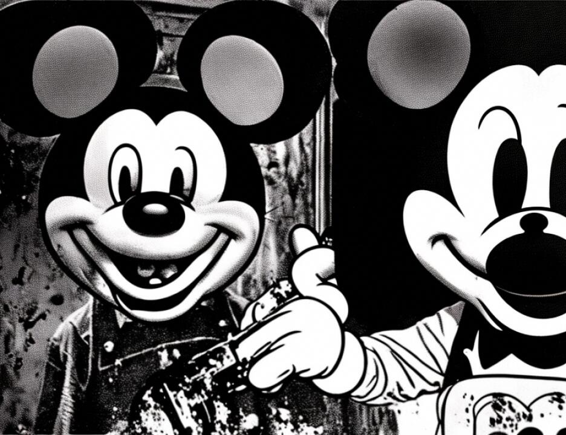

11 BY MR. WILFORD:
12 Q Good afternoon, Agent Doran.
13 A Good afternoon, Mr. Wilford.
14 Q How are you?
15 A Good, thanks.
16 Q Now, would you tell the ladies and gentlemen of the jury
17 how long you've been an FBI agent?
18 A Just over five years.
19 Q As part of your duties as an FBI agent were you assigned
20 to participate in the investigation of the bombing of the
21 embassy in Nairobi?
22 A I was.
23 Q And as part of your duties concerning that investigation
24 were you assigned to remove evidence from various places and
25 take that evidence to various places?
4718
1 A Can you repeat that? Was I assigned to take away
2 evidence?
3 Q Did you pick up evidence from the evidence locker or from
4 other people and bring it to the New York field office?
5 A No.
6 Q You did not?
7 A No.
8 Q Did you ever pick up evidence and take it anywhere?
9 A My name appears on a chain of custody for a number of
10 items of evidence because at the time that the investigation
11 started, the case was being run out of the Washington field
12 office. When the case became a New York case, I went through
13 and administratively put my name on parcels of evidence, but
14 as for taking evidence of searches, no.
15 Q Not for searches, but you did pick up evidence from the
16 Washington field office and take it to New York?
17 A No.
18 Q Did you ever pick up evidence on February 22 of this year?
19 A I don't recall.
20 MR. WILFORD: Your Honor, may I approach the witness?
21 THE COURT: Yes.
22 Q I want to show you two items that have been previously
23 Bates stamped 1B375 and 1B slash 39-3 and I've highlighted the
24 areas.
25 A Okay. These weren't brought from Washington. These were
4719
1 brought from the New York FBI office to the Southern District
2 of New York.
3 Q Now, Agent Doran, would it be fair to say that you picked
2